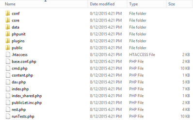
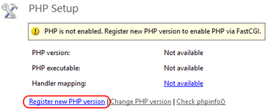

Example: Installing Pydio on Windows Server 2012 R2 / IIS 8.5
Author Allan Dynes (Allan @ AllanDynes.com) This guide is assuming a vanilla install of Server 2012 R2 and lists all prereqs to get Pydio up and running with IIS 8.5 / Server 2012 R2. I have found that none of the current guides cover everything 100% so through lots of testing and looking at all the other guides I wrote this one. It’s making a couple assumptions which I think make sense for the average Windows based server:
- You are starting with a fresh Server 2012 R2 install. It is setup how you want it setup (named, domain joined, etc) and all windows updates are done.
- MySQL will be used for the database locally.
- LDAP/AD authorization will be used for all users.
Adding the server roles¶
We will need to install some roles and features for Pydio and PHP to work properly and also some pre-reqs for additional software we will be installing later. Start up the Server Manager if it didn’t open on its own at login and click Manage -> Add Roles and Features.
- At the Before You Begin screen click Next
- Leave the default of Role-based or feature-based installation and click Next
- The local server should be selected be default. Click Next
- In the list select Web Server (IIS)
- For the Add features required box that pops up click Add Features then Next
- At the Select features screen check off .Net Framework 3.5 Features (required by the PHP manager later) and Next
- At the Web Server Role (IIS) screen click Next
- At the Select role services screen leave all the defaults checked and then expand Application Development and check “CGI” then Next
- At the Confirm installation selections you will most likely get a warning about specifying an alternative source to download the .Net 3.5 files from. Click Specify an alternative source path at the bottom and enter in the path to these files. If you are using a Server 2012 DVD it would be D:\Sources\SxS\ where D: is your DVD drive. Once entered click OK then Install.
- Once installed click Close. Next check Windows Updates as there will be updates to the .Net 3.5 framework that was just installed. Install all updates then reboot before the next step.
Installing required software¶
You can install some of these through the built in Microsoft Web Platform Installer 5.0 (Web PI) but after doing so many times I have found it easier to download and manually install the files I need. The Web PI also seems to have some outdated files and I rather have the most up to date ones as possible.
First download PHP 5.6: http://windows.php.net/download/ . You want the one labeled “VC11 Non Thread Safe x86” which should be the top download in the list. Extract the zip file to C:\Program Files (x86)\PHP.
Next download and install the WinCache extension: http://sourceforge.net/projects/wincache/files/wincache-1.3.7/wincache-1.3.7.4-5.6-nts-vc11-x86.exe/download and run that. It will extract some files to the directory of your choosing. Copy the file php_wincache.dll to the C:\Program Files (x86)\PHP\ext directory. This will help speed up PHP on your Windows server dramatically.
PHP Manager is next so download the x64 version: https://phpmanager.codeplex.com/releases/view/69115. It still lists as for IIS 7 but there have been no changes and works fine on IIS8/8.5.
Download MySQL here: https://dev.mysql.com/downloads/mysql/5.5.html Grab the latest x64 version in the series for Windows and install. A typical installation should be fine. Once it’s done leave the checkmark to configure the instance. Choose a Standard Configuration and leave all the defaults. Enter in a root password and write it down as you’ll need it later to create your database.
You will need the Microsoft URL Rewrite 2.0 module for public links to redirect correctly. Get that here: http://go.microsoft.com/fwlink/?LinkID=615137 and install it.
Lastly PHP requires the Microsoft Visual C++ 2012 Redistributable. Without it you’ll throw Internal Server 500 errors all day trying to run PHP. Download the x86 version to match PHP: http://www.microsoft.com/en-us/download/details.aspx?id=30679 and install it.
Download Pydio¶
Download the latest version of Pydio. Unzip the zip file to C:\inetpub\wwwroot\pydio or whatever name you choose. For my server I called the folder “cloud.mydomain.com” which I will be using throughout these instructions. Now I have found that public links do not work because of a later requests filtering rule on the data directory. For this reason I MOVE the public directory one directory higher off the root as such: 
{kind=link}
Once the public folder is moved up a directory browse into it and delete the index.htm. We’re going to add a handler later to redirect people trying to browse the public folder over to our custom 404 error page.
Configuring PHP¶
There are some settings to change in PHP to make Pydio happy. Startup Internet Information Services (IIS) Manager then click on your server in the tree on the left. You will probably get a prompt about the Microsoft Web Platform. Click the “Do not show this message” box and then No. Double click the PHP Manager and you should have a yellow warning that PHP is not enabled. Click Register new PHP version: 
{kind=link}
Click the browse button (three dots) and select C:\Program Files (x86)\PHP\php-cgi.exe then OK. Now click the Set Runtime Limits link. Here is one thing that will limit your ability to upload large files. Personally I have my “Maximum POST size” and “Upload Maximum File Size” both set to 512M, my “Maximum Input Time” set to 300, and my “Memory Limit” set to 512M. Set as appropriate for your environment then click the Apply button in the top right then Back to main page.
Let’s turn on some extensions. Click “Enable or disable an extension” then in the Disabled list find php_wincache.dll and click Enable in the top right. Next find php_ldap.dll which we will need for LDAP/AD authentication and enable that. Also if you will be using the email function find php_snmp.dll and enable that too and php_exif.dll if you plan on handling images (probably). Click Back to main page.
I have found that PHP does not have access to the default temp directory on a 2012 R2 server so we will switch this to another directory and give Pydio write access to it. While still in the PHP Manager click “Manage all settings” then find “upload_tmp_dir” in the list. Change this value to “C:\inetpub\temp”. Then find “session.save_path” and change that to “C:\inetpub\temp\sessions”.
Lastly is output buffering which is recommended to be turned off. Look for “output_buffering” and change it from the default of 4096 to “Off”. While you’re in here if you will be using the email functions of PHP look for SMTP and change that to your server and smtp_port if you use something other than the default of port 25.
Once all these changes are done PHP should be configured correctly for Pydio
Creating the Application Pool¶
You should still be in the IIS Manager. On top left menu select “Application Pools” then right click it and select “Add Application Pool…”. For the name enter pydio and change the .Net CLR version to “No Managed Code” then click OK.
Creating the Site¶
On the left side highlight “Sites” then right click it and select “Add Website…”. Enter a name for your site, again I’ll be using cloud.mydomain.com to match my directory name. Click the “Select…” button on the right and select the “pydio” application pool you created in the last step then OK.. Click the browse button for the physical path (three dots) and select your directory under C:\inetpub\wwwroot(pydio directory) and then OK. Under the binding enter the host name that will be used. Again for mine I am entering cloud.mydomain.com. Click OK.
Once created expand out “Sites” and select it. Double click the “Authentication” button then right click “Anonymous Authentication” and select “Edit…”. Check off “Application pool identity” and click OK.
Setup Folder Permissions¶
Time to set some permissions for Pydio. Navigate to your C:\inetpub folder. First right click the temp directory and go to Properties. Click the Security tab then click Edit. Click Add then under Locations… make sure the server is selected at the top. In the object names field enter “iis apppool\pydio” then Check Names. It should resolve to just “pydio”. Click OK then give this user Modify writes to the temp folder and click OK twice. Now navigate into the temp folder and add a new folder called “sessions”. That should take care of our temp file locations.
Go up a directory and then navigate to your wwwroot directory which should be c:\inetpub\wwwroot. From here right click your Pydio folder and select Properties then click the Security tab. Click the Advanced button at the bottom then Disable Inheritance. Select to Convert inherited permissions into explicit permissions on this object then check the box marked “Replace all child permission…” then OK. You will get a warning. Click YES. Click the Edit button back on the Security tab, find the “IIS_IUSRS” group, and Remove. Now click Add and add the pydio application identity (iis apppool\pydio) as you did above for the temp directory. Leave the default rights of read and no write access then click OK twice.
Now we have to give the pydio application pool identity write access to the data and public directories. Go into pydio folder, right click the data directory, and edit your pydio identity to have Modify rights by clicking Edit then adding the modify right for the pydio user then do the same for the public folder.
Add our Web.Config Files¶
For the data and public folders we need to create a web.config file to both protect our data and also make our rewrite rules work. By default you cannot see file extensions so in Explorer click the View menu then check off File name extensions. Create a new web.config file for each location and in the first notice the setting called maxAllaowedContentLength in the root web.config file. This defaults to 30M through the GUI and in my example its set for 512M. This will also prevent uploads larger then this value so adjust accordingly:
C:\inetpub\wwwroot\pydio\web.config
1 2 3 4 5 6 7 8 9 10 11 12 13 14 15 16 17 18 19 20 21 22 23 24 25 26 27 28 29 30 31 32 33 34 35 36 37 38 39 40 41 42 43 44 45 46 47 48 49 50 51 52 53 54 55 56 57 58 59 60 61 62 63 64 65 66 67 68 69 70 71 72 73 74 75 76 77 78 79 80 81 82 83 | |
C:\inetpub\wwwroot\pydio\public\web.config
1 2 3 4 5 6 7 8 9 10 11 12 13 14 15 16 17 18 19 20 21 22 23 24 25 26 27 28 29 30 31 32 33 34 35 36 37 38 39 40 41 42 43 44 45 46 47 48 49 50 51 52 53 54 55 56 57 58 59 60 61 | |
Create the pydio database in MySQL Start up the MySQL command line. Enter in the root password you wrote down earlier and then at the command prompt enter the following to create a database named pydio with a user (pydiouser) and password (mypydiopw) that has access to this database:
1 2 3 | |
Type exit to close the command prompt.
Start the Pydio Install Wizard and finish the install¶
All our setup should be done. Browse to your pydio installation using the full URL, in my example its http://cloud.mydomain.com/. You will be presented with a check of the requirements for installation of pydio which should have no errors after following the steps above although you might have a couple warnings for PHP command line and SSL. If you have any red errors then something is wrong and they need to be fixed before continuing, make sure you followed all the steps above correctly.
Click the link that says “click here to continue to Pydio” to start the wizard. At the first screen pick your language and then “Start Wizard”. For admin access enter an admin login, display name, and password. This will only be used for the initial setup as we will be switching to LDAP/AD for future access.
For your global options you may want to change the application title, I changed mine to “MyDomain Cloud Storage” and same with the welcome message. Also enable emailing if you plan on having that functionality and select “Mail” for the PHP Mailer. Put in your own email for the administrators email or an account you have access to.
For configurations storage we will be using MySQL. Click on “Database” in the drop down for storage type then for the host change it from localhost to 127.0.01. For the database name, user, and password use the information in the step above (pydio, pydiouser, and mypydiopw). For Use MySQLi check Yes.
Click the Install Pydio Now button to apply all these settings. It should come back letting you know it cannot write to the .htaccess file. Copy the contents as it instructs you to do and manually paste it into C:\inetpub\wwwroot\pydio.htaccess then refresh the page.
You should get a login page. Login as the administrator that you just defined.
Setting up LDAP access¶
In my scenario I will be setting up LDAP access for my users. I don’t want ANY local users. In fact after this step and a reboot of the server the default admin login will no longer work. After this we will lock down some of the interface so users can’t change their account (the info will come from Active Directory…we don’t want them to change anything).
You should be logged in as the administrator. Click the admin drop down in the top right then Settings. Click Application Parameters then Application Core. Double click Authentication and change as follows:
Secure Login Form: I recommend switching this to Yes
Main Instance (I’m only listing one that I am changing. Use defaults for the rest)
- Instance Type: LDAP/AD Directory
- LDAP URL: enter your primary domain controllers FQDN such as DC.mydomain.com
- Protocol: leave on standard unless you are using LDAPS
- LDAP Port: 389 for standard. 636 for LDAPS
- LDAP Bind Username: This is the full path to your user. If you create a service user called “LDAP Lookup” in a OU called “Service Accounts” for your domain “mycompany.com” it will look something like “CN=LDAP Lookup,OU=Service Accounts,DC=mycompany,DC=com”
- LDAP Bind Password: The login password for the above user
- People DN: The OU to search for users such as “OU=Users,DC=mycompany,DC=com”
- LDAP Filter: Filter to use against your users. You can use the default or use mine, it works well to pull all users that have an email address assigned so it filters out most of my service accounts: “(&(|(objectClass=person))(mail=*))”
- User Attribute: The attribute that the users will use to login. I default to sAMAccountname, you might use mail.
- LDAP Attribute: I recommend adding two. One that will map your users real name to the user display name and one to map their email address.
- LDAP Attribute: displayName / Mapping Type: Plugin Parameter / Plugin Parameter: core.conf/USER_DISPLAY_NAME
- LDAP Attribute: mail / Mapping Type: Plugin Parameter / Plugin Parameter: core.conf/email
Hit Save then scroll back down to “Test User”, enter a known user ID or email if that’s what you chose for user attribute, and click “Try to connect to LDAP”. It should be successful. If not figure out what is wrong in your LDAP/AD config before proceeding.
We cannot publicly share files until a secondary form of authentication is setup. Scroll to the bottom of the Authentication screen and under “Secondary Instance Mode” pick Master/Slave. Under “User Listing” switch to Master Only then for “Instance Type” select DB authentication storage then Save.
VERY IMPORTANT: Since I am only using LDAP/AD authentication at this point and the secondary is only for the public links to work the default admin login will not work once you log out and your session is destroyed. This is how I want my setup as I rather control all users through AD and not have a second set of users in Pydio. So the next thing to do is assign one of your AD users an administrator so you can get back in after you log out of the default admin account.
Click “Workspaces & Users” on the left then “Users and Groups” and you should have your user list. Select one of your users in the list and then click Edit. Under “Special Profile” select “Administrator” then Save. Open a different browser on your system or connect from another system, navigate to the site, and verify your AD user can login and has administrative rights with a “My Settings” option.
Setup our default Role to lock down the user¶
Now to setup the default role and lock out some stuff I don’t want my users getting into. On the left click “Workspaces & Users” then “Roles”. Double click the “Root Role”. Enter in a country, language, and default repository. I personally have users default to their My Files. Click on the ACL and for my users I deny the default Common Files (I’ll create my own later) along with My Account. I leave My Files and Home as read write. Click the Actions tab. Now to lock the user out of the My Account screen since all our info is coming from AD. Select Conf.sql – switch_to_user_dashboard (My Account) – All Workspaces and Add Action. Click Save and the “My Account” option should not be there when a user logs in.
Change the public share location and links¶
Because we are using a non-standard public file location we need to tell Pydio where that now is. While in Settings navigate to Application Parameters -> Application Core -> Pydio Main Options. Change your download folder to remove the data subdirectory as such:
AJXP_INSTALL_PATH/public
Also hard code the public link in to your URL with the public subdirectory afterward:
http://cloud.mydomain.com/public
Personally while I’m in here I also disable Zip Creation because I don’t want people downloading massive amounts of files as a zip. Click Save when down.
Testing¶
Login as a non-administrator AD account and you should find your correct AD name pops up in the top right and there is no My Account option. Upload a file to your My Files workspace and then share it out. It should generate an “http://cloud.mydomain.com/public/7adbe5” link which if you paste into a different browser or another system should redirect to the file. Click the Invite button and type in your email address and send. Test the link in your email also.
Some extra customizations
I have a lot of customizations that work for me but might not for you. If you are happy with your Pydio install and want to play then you should stop here. However I have found for a business certain things don’t make sense to allow and have disabled them. Here are some of them and how to disable.
Under “Workspaces & Users” -> “Roles” -> “Root Role” -> Actions list:
No downloading files chunked: access.fs – download_chunk – All Workspaces
No copying files: access.fs – copy – All Workspaces
No moving files: access.fs – move – All Workspaces
I also have some workspaces where I want people to be able to share files but NOT folders or multiple files at once. These are company-wide shared workspaces with everyone having read access so I lock out minisites for those:
Company “shared” folders: action.share – share-folder-minisite-public – (Shared Workspaces)
Company “shared” folders : action.share – share-selection-minisite – (Shared Workspaces)
Personally I want my users to be able to share out mini sites for their own files and allow customers and vendors upload rights but I don’t want them to create new workspaces. I change that under “Application Parameters” -> “Feature plugins” -> “Action plugins” -> “Sharing Features”
Folder Sharing -> Enable Folder Sharing -> Change to Minisites Only
At the same time I don’t want shared links sitting out there forever:
Link Generation -> Maximum File Expiration Limit -> xx days (I set for 90).
Lastly I do not want my users to have a recycle bin in their “My Files”. That’s removed by editing the “bootstrap_repositories.php” file under the conf subdirectory and changing the “RECYCLE_BIN” setting from ‘recycle_bin’ to an empty string ( ‘’ ).
After all these customizations the site works how I need it to. Modify for your own use and play with it. Remember that some of these changes need the plugin cache cleared before they take effect or reboot the server which also seems to do the trick.